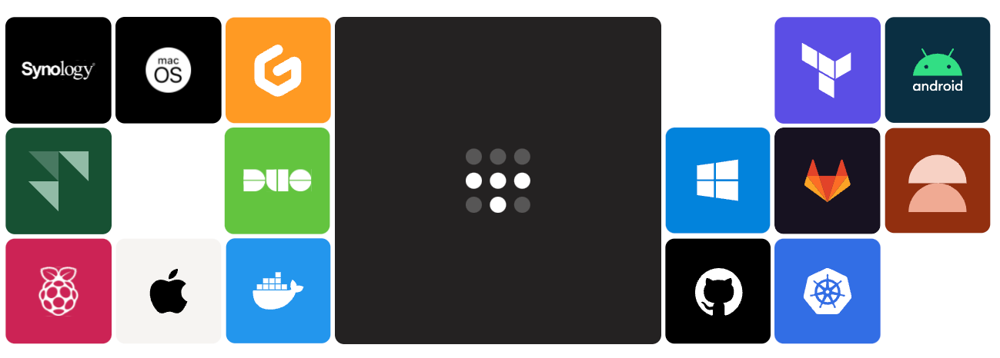
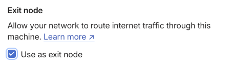
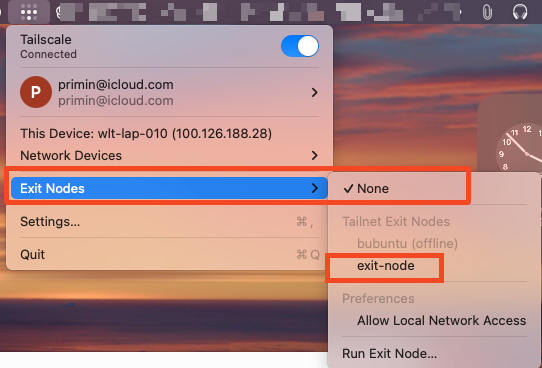
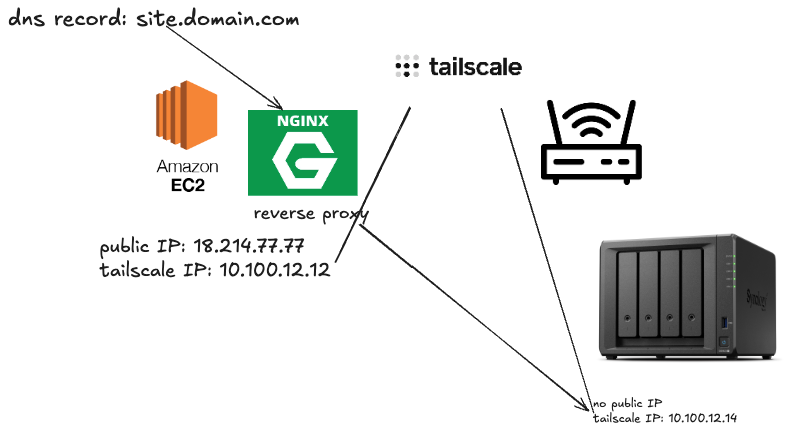
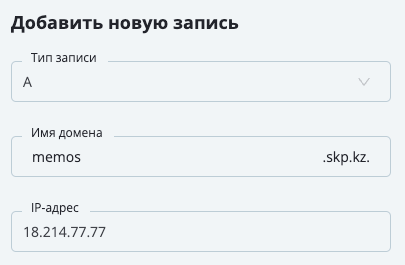

Предистория
На tailscale я наткнулся случайно, когда изучал Umbrel OS там в магазине приложений можно было скачать и установить эту штуку. Далее начал изучать конкурентов:
Zerotier | Netbird.io | Headscale (self-hosted)
И когда увидел, что tailscale имеет нативную поддержку Synology, понял что остановил свои поиски
mesh vpn
Tailscale — Это облачный VPN сервис позволяющий гибко настраивать RBAC (Role Based Access Control), поддерживается большинством операционными системами даже такими сервисами как Docker, и NAS - synology. Отличительной чертой сервиса можно выделить, что каждый клиент сети (в данном случае - node) может выступать в качестве роутера сети и точки выхода. Такой сервис прекрасно сочетается с обратным проксированием и потенциально может публиковать любой сервис в публичную сеть из любого места даже где нет выделенного IP. А также как дополнительный периметер сетевой безопасности с двух-факторной аутентификацией. В общем сервис обладает очень широкими возможностями. В этой статье рассмотрим по подробнее.

Рассматривать будем на примере HomeLab — домашней лаборатории. Где у нас имеется потенциально Linux машина под управлением например Ubuntu, Synology NAS и например EC2 инстанция в AWS на бесплатном тарифном плане с публичным IP.
Easy to deploy
Основная фишка сервиса заключается в том, что вам не нужны глубокие знания в построении VPN серверов, настроек туннелей и шифрований. Все уже предустановлено для вас в облаке. Вам только нужно установить клиенты на свои хосты и начать пользоваться. Скорость развертывания такой сети равна считанным минутам.
Например вы можете заходить по RDP обходя все возможные фаерволы на свой домашний комп находясь в офисе и наоборот.
Подключаться по ssh но самое интересное как обычно начинается когда вы ставите Linux:
Network router
C помощью network router можно соединять корпоративные сети и объединять их в одну.
Сначала мы установим Tailscale на Ubuntu
curl -fsSL https://tailscale.com/install.sh | sh
Вся прелесть в том, что любую ноду в сети (Linux) можно превратить маршрутизатор например вы обслуживаете организацию и хотите из дома подключаться к любому хосту в удаленной сети - нет проблем. Устанавливаем туда быстренько виртуалочку ставим tailscale, вводим в нашу сеть и выполняем следующую команду
echo 'net.ipv4.ip_forward = 1' | sudo tee -a /etc/sysctl.d/99-tailscale.conf
echo 'net.ipv6.conf.all.forwarding = 1' | sudo tee -a /etc/sysctl.d/99-tailscale.conf
sudo sysctl -p /etc/sysctl.d/99-tailscale.conf
Таким образом мы создали правило маршрутизации трафика далее
sudo tailscale up --advertise-routes=192.168.151.0/24
Указываем какую именно подсеть нужно маршрутизировать (на забудьте заменить на свою). Далее это нужно будет еще подтвердить в админ консоле.
Exit node
Exit node — это возможность использовать ноду в качестве vpn сервера. Например вы живете в России и у вас есть друг в Казахстане. (сейчас наверное у многих Россиян есть такой друг) вы ему звоните и просите помочь, он вам дает доступ на свой комп где вы разворачиваете ubuntu server с 1 Гб Озу и вводите его в свою tailscale сеть, а далее включаем exit node режим. Теперь вы сможете использовать его компьютер в качестве vpn сервера. Таким образом весь ваш трафик будет идти через комп друга. Это крайне удобно в случае обхода различных блокировок, а главное бесплатно и развертывается за 5-10 мин. Давайте попробуем. Устанавливаем сервис через curl как описано выше.
Потом также включаем форфардинг трафика
echo 'net.ipv4.ip_forward = 1' | sudo tee -a /etc/sysctl.d/99-tailscale.conf
echo 'net.ipv6.conf.all.forwarding = 1' | sudo tee -a /etc/sysctl.d/99-tailscale.conf
sudo sysctl -p /etc/sysctl.d/99-tailscale.conf
Далее:
sudo tailscale up --advertise-exit-node
Далее нам в админке нужно включить функцию “use as exit node”

Потом на удаленном клиенте появится возможность выбора точек выхода и весь ваш трафик будет идти через эту точку.

Reverse proxy
Это вообще прикольная штука!

Предположим у вас есть сервер в облаке с публичным IP, многие облачные провайдеры предоставляют бесплатно такие штуки. Например AWS EC2 Micro tier. (Azure, GCP, VK_Cloud, и т.д.)Мы установим niginx в качестве веб сервера в AWS и скажем ему направлять весь трафик на Synology где мы можем хостить любой сервис который нам захочется. Например вести блог, писать заметки, развернуть систему мониторинга тут все зависит от задач и фантазии.
Для примера для данной статьи возмьмем приложение Memos — это что то вроде “твитера” где можно писать свои мысли, делать ежедневные заметки а также добавлять друзей и делать свою внутреннюю, закрытую социальную сеть.
Данное приложение развернуто на базе Docker контейнера и доступно по локальному адресу synology, веб сервер слушает порт 8083 по протоколу SSL/HTTPS, и 8082 по http/80.
Наша задача сделать сайт https://memos.skp.kz и пробросить порты 443>8083 с помощью веб сервера nginx который доступен по публичному IP и расположен на серверах aws.
Для начала я создам DNS A запись и укажу внешний IP EC2 AWS примерно так:

Обычно такой функционал есть у любого регистратора доменов/хостинг провайдера.
Далее мы зайдем на наш публичный веб сервер и скажем ему проксировать весь трафик на наш Synology:
сначала создадим сайт
sudo nano /etc/nginx/sites-available/memos.skp.kz
Пропишем следующую конфигурацию:
server {
listen 80;
server_name memos.skp.kz;
location / {
proxy_pass http://100.65.236.103:8082;
proxy_set_header Host $host;
proxy_set_header X-Real-IP $remote_addr;
proxy_set_header X-Forwarded-For $proxy_add_x_forwarded_for;
proxy_set_header X-Forwarded-Proto $scheme;
}
}
Проверим синтаксис
sudo nginx -t
Включим сайт
sudo ln -s /etc/nginx/sites-available/memos.skp.kz /etc/nginx/sites-enabled/
Перезагрузим сервис
sudo systemctl reload nginx
Проверим доступность сайта, пока только по http:
Далее останется только прикрутить SSL сертификаты с помощью certbot-a
sudo certbot --nginx -d memos.skp.kz
Заменим содержимое файла
sudo nano /etc/nginx/sites-available/memos.skp.kz
На следующее
server {
listen 80;
server_name memos.skp.kz;
# Redirect all HTTP traffic to HTTPS
return 301 https://$host$request_uri;
}
server {
listen 443 ssl;
server_name memos.skp.kz;
ssl_certificate /etc/letsencrypt/live/memos.skp.kz/fullchain.pem;
ssl_certificate_key /etc/letsencrypt/live/memos.skp.kz/privkey.pem;
ssl_protocols TLSv1.2 TLSv1.3;
ssl_prefer_server_ciphers on;
location / {
proxy_pass https://100.65.236.103:8083;
proxy_set_header Host $host;
proxy_set_header X-Real-IP $remote_addr;
proxy_set_header X-Forwarded-For $proxy_add_x_forwarded_for;
proxy_set_header X-Forwarded-Proto $scheme;
}
}
Перезапустим веб сервер и вуаля
sudo systemctl reload nginx
Готово. Теперь наш ресурс https://memos.skp.kz доступен с любой точки земли и живет дома под телевизором. И если я даже перееду в другую квартиру/город/страну конфигурация не измениться.
Другие варианты использования
Shared Network
А еще можно на основе tailscale развернуть систему мониторинга например zabbix, без использования zabbix proxy сервера так как все хосты будут объедененны в одну, общую сеть. То же самое касается DevOps инфраструктуры. Docker swarm, k8s.
Резервное копирование
Можно по внутренней сети организовывать доступ к хранилищам FTP/SMB NAS и т д. Таким образом храня копии совершенно в другом географическом месте.
Zero Trust Network
Также можно использовать данный инструмент как периметер безопасности из завайтлистить “white list” доступ к вашим серверам и SaaS приложениям только из определенного диапазона сети (100.65.190.0/24) таким образом чтобы подключиться к вашей сети участники будут обязаны использовать 2FA или например аппаратные ключи.